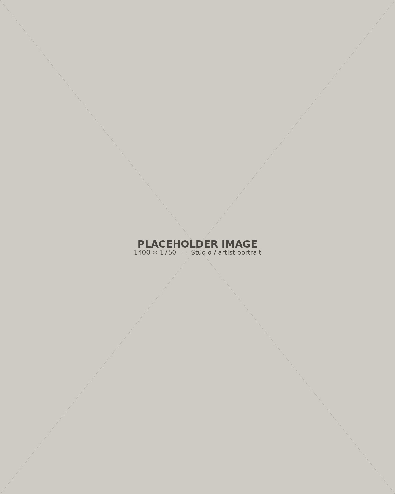

[Placeholder biography. Two or three sentences on who Tong Yin is, where the work is based, and how it developed — written in third person, as it would appear in a gallery press release.]

Biography
Statement
[Placeholder artist statement. A short paragraph in first person describing the concerns, materials, or questions the work returns to.]
Education
[Year]
[Placeholder] Degree, Institution, City
[Year]
[Placeholder] Degree, Institution, City
Selected Exhibitions
Solo
[Year]
[Placeholder] Exhibition Title, Gallery / Institution, City
Group
[Year]
[Placeholder] Exhibition Title, Gallery / Institution, City
[Year]
[Placeholder] Exhibition Title, Gallery / Institution, City
Awards & Residencies
[Year]
[Placeholder] Award or residency name, Organization
Press & Publications
[Year]
[Placeholder] Publication name, "Article title"